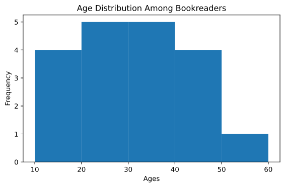
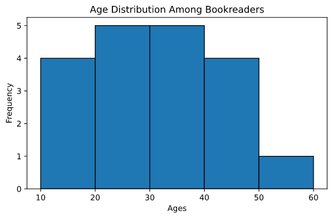
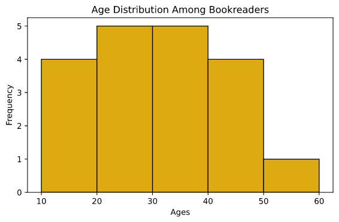

A histogram is an approximate representation of the distribution of numerical data.To construct a histogram,the first step is to bin
the range of values (dividing the entire range of values into a series of intervals) the data.Follow the following steps to plot histograms with the help of matplotlib and Python.
Importing the libraries
# importsfrom matplotlib import pyplot as plt import numpy as np
Organizing the data
# organizing the data # different ages among book-readers in a library
ages = np.array([14,15,17,19,21,23,24,27,29,33,35,36,37,39,41,43,45,49,50])
# bins# bins are used to group the data
bins = np.array([10,20,30,40,50,60])
Plotting the data
# plotting
plt.hist(ages,bins)
"""
The hist() method is used to plot a histogram, the first parameter is the set of values to be plotted and the second yet not mandatory attribute is bins which is used to group the data to be plotted
"""
plt.title("Age Distribution Among Book-readers")
plt.xlabel("Ages")
plt.ylabel("Frequency")
plt.tight_layout()
plt.show()
Here's what pops up on the window:

First Draft
Adding an edge color to the plot
# adding an edge color to the plot# adding an edge color is as simple as passing the edgecolor with a color value
plt.hist(ages,bins,edgecolor="black")
plt.title("Age Distribution Among Book-readers")
plt.xlabel("Ages")
plt.ylabel("Frequency")
plt.tight_layout()
plt.show()
Here's the plot after adding edge color to it:

Histogram With Black Edge Color
Changing the color of the histogram bar
# changing colors for the bars # color
color = ["#ddaa11"]
# we can change the default color of our bars by passing the color value to the color argument
plt.hist(ages,bins,color=color,edgecolor="black")
plt.title("Age Distribution Among Book-readers")
plt.xlabel("Ages")
plt.ylabel("Frequency")
plt.tight_layout()
plt.show()
The plot with changed bar color looks like this:

Histogram With Manually Passed Color For Bars
Plotting a histogram on a logarithmic scale
# plotting a chart on a logarithmic scale
"""
When a large dataset isn given then a few groups within the data might become obscure in comparison with another group,that's the reason a plot with a logarithmic scale is plotted.
"""
# data
population = np.array([10,20,30,33,34,35,36,37,38.5,39,50,39.5])